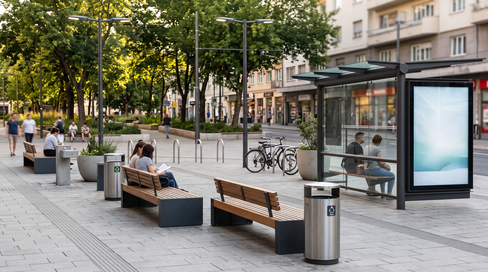

ESPAÇOS PÚBLICOS INCLUSIVOS
Praça para todos
Diretrizes, soluções e tecnologia para peças mais acessíveis, seguras e acolhedoras para toda a comunidade.
Mais acessibilidade para todos
Espaços públicos mais humanos
Conhecimento aplicado na prática
Participação da comunidade
Explore os temas
Conheça os principais assuntos relacionados à acessibilidade e à inclusão nos espaços públicos.

Mobiliário urbano
Saiba mais →
Lazer e convivência
Saiba mais →
Sinalização
Saiba mais →
Paisagismo e infraestrutura
Saiba mais →
DESENHO UNIVERSAL E ACESSIBILIDADE
Tecnologias
Tecnologias
Assistivas
As Tecnologias Assistivas (TA) desempenham um papel transformador quando aplicadas ao planejamento e diagnóstico de espaços públicos, unindo os cinco pilares fundamentais da acessibilidade urbana.

01
Circulação e Acessibilidade Física (Rotas Livres)
Caminhos irregulares, degraus e a ausência de sinalização no piso impedem o deslocamento autônomo de pessoas com deficiência visual, cadeirantes e pessoas com mobilidade reduzida. Garantir rotas contínuas, niveladas e livres de obstáculos é a base fundamental para o acesso seguro a todos os ambientes da praça.
Critérios de acessibilidade
- Faixa livre de circulação com largura mínima recomendada de 1,50 m (admitindo-se o mínimo absoluto de 1,20 m), totalmente desobstruída.
- Piso com superfície regular, firme, estável e antiderrapante sob qualquer condição climática, evitando trepidações em cadeiras de rodas.
- Rampas com inclinação transversal máxima de 2% e longitudinal de até 8,33% (1:12), acompanhadas de corrimãos em duas alturas e guias de balizamento.
- Instalação contínua de piso tátil direcional para orientar trajetos lineares e piso tátil de alerta em cruzamentos, mudanças de direção e início/término de rampas.
- Contraste visual e luminotécnico evidente entre o piso tátil e o pavimento adjacente.
Referência: ABNT NBR 9050:2020 e ABNT NBR 16537.
02 · Multissensorial
Sinalização e Comunicação Multissensorial
A falta de informações acessíveis limita a orientação espacial e exclui usuários com deficiência visual, auditiva ou intelectual. A integração de recursos táteis, visuais e digitais permite que qualquer visitante compreenda a disposição da praça e interaja com o espaço de forma independente.

Critérios de acessibilidade
- Mapas táteis e totens informativos posicionados fora da faixa de circulação principal, com plano inclinado entre 0,90 m e 1,20 m do piso acabado para alcance manual e visual.
- Textos em Braille, caracteres em alto-relevo e fontes sem serifa com alto contraste cromático entre texto e fundo.
- Placas de sinalização direcional com pictogramas universais claros, indicativos de direção e identificação dos setores (sanitários, jardim sensorial, parquinho).
- Recursos digitais integrados por meio de QR Codes acessíveis que oferecem audiodescrição ambiental e tradução em Língua Brasileira de Sinais (Libras).
- Piso tátil de alerta instalado ao redor dos totens para sinalizar a presença do equipamento a pessoas com deficiência visual.
Referência: ABNT NBR 9050:2020 e ABNT NBR 16537.
03 · Conforto e Permanência
Mobiliário Urbano e Conforto Inclusivo
Equipamentos urbanos sem ergonomia ou espaço de aproximação dificultam o descanso, a hidratação e a convivência social de idosos, pessoas com mobilidade reduzida e usuários de cadeiras de rodas. O mobiliário inclusivo assegura permanência digna e integração entre todos os frequentadores.

Critérios de acessibilidade
Bancos com encosto, apoios laterais para os braços e área livre adjacente (módulo de referência de 0,80 m × 1,20 m) para posicionamento de cadeiras de rodas sem obstruir a passagem.
Mesas de jogos e convívio com altura livre inferior mínima de 0,73 m e profundidade de 0,50 m para encaixe frontal de cadeiras de rodas, além de marcações táteis nos tabuleiros.
Bebedouros com bicas em duas alturas distintas (0,90 m para cadeirantes/crianças e 1,00 m a 1,10 m para adultos em pé) e acionamento leve por botão frontal ou lateral.
Posicionamento de lixeiras e equipamentos fora da linha de fluxo principal, sinalizados no solo com piso tátil de alerta.
Referência: ABNT NBR 9050:2020.

04 · Lazer e Convívio
Lazer, Esporte e Integração Sensorial
Áreas recreativas e esportivas convencionais frequentemente segregam crianças e adultos com deficiência. O planejamento de brinquedos adaptados, quadras acessíveis e jardins sensoriais promove o convívio inclusivo, o estímulo cognitivo e o direito pleno ao lazer.
Critérios de acessibilidade
- Parquinho inclusivo com brinquedos integrados no nível do solo (como carrosséis embutidos e painéis interativos) e piso emborrachado contínuo de absorção de impacto.
- Jardins sensoriais com canteiros elevados (altura entre 0,45 m e 0,75 m) permitindo o alcance tátil e olfativo de plantas aromáticas e de diferentes texturas por pessoas sentadas ou em pé.
- Estações de ginástica e quadras esportivas conectadas à rota acessível principal, contando com aparelhos adaptados para uso em cadeira de rodas.
- Estímulos multissensoriais (painéis musicais, texturas variadas e contraste de cores) voltados ao desenvolvimento e conforto de pessoas neurodivergentes (TEA) e com deficiência visual.
Referência: ABNT NBR 9050:2020 e Lei Brasileira de Inclusão (Lei nº 13.146/2015).

05 · Conservação e Visibilidade
Segurança, Iluminação e Manutenção
Uma praça acessível perde sua funcionalidade se não houver iluminação adequada e conservação constante. Buracos no pavimento, galhos baixos ou lâmpadas queimadas transformam rotas seguras em barreiras físicas e riscos de acidentes, especialmente no período noturno.
Critérios de acessibilidade
- Iluminação pública uniforme ao longo de toda a rota acessível, evitando zonas de sombra e ofuscamento (fundamental para pessoas com baixa visão e para leitura labial de pessoas surdas).
- Poda preventiva de árvores e arbustos, mantendo altura livre mínima de 2,10 m acima do passeio para evitar colisões com pedestres cegos.
- Manutenção periódica do nivelamento dos pisos, recomposição de peças soltas do piso tátil e desobstrução de grelhas e ralos (com vãos máximos de 15 mm).
- Totens e canais digitais de zeladoria participativa via QR Code para que os próprios usuários reportem danos ou barreiras em tempo real.
Referência: ABNT NBR 9050:2020 e ABNT NBR 5101 (Iluminação Pública).
ANÁLISE INTEGRADA
Diagnóstico e avaliação
Uma avaliação abrangente que reúne os diferentes aspectos analisados para compreender as condições gerais de acessibilidade do espaço.
ACESSIBILIDADE E INCLUSÃO
Espaços públicos para todas as pessoas
Uma praça acessível é aquela que permite que todas as pessoas possam circular, participar e aproveitar seus espaços com autonomia, segurança e conforto.
Nosso projeto reúne conhecimentos, diretrizes e soluções para tornar os espaços públicos mais inclusivos e acolhedores.
Conheça as diretrizes →